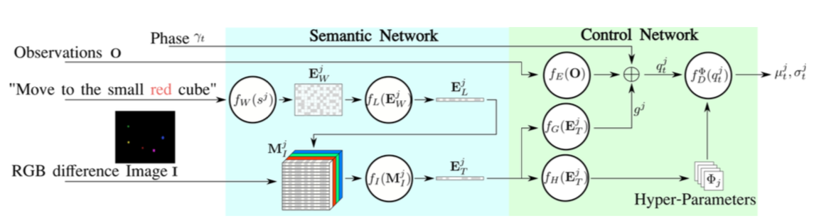
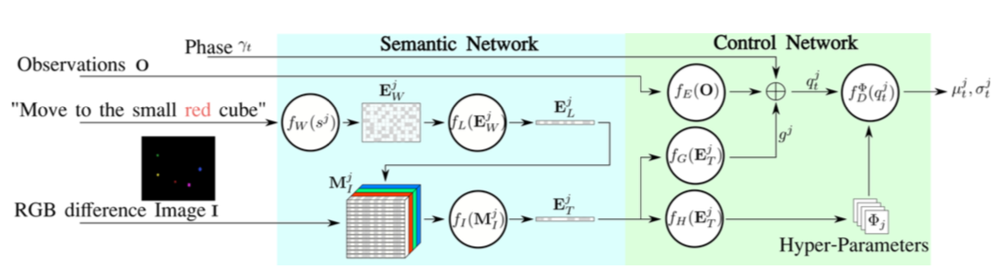
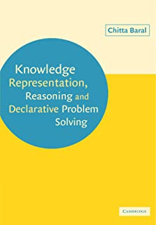
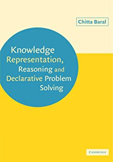

Introduction to our Lab
The current research focus of our lab is to build automated systems (and develop underlying methodologies and address
associated challenges) that can understand text, images, and videos.
We then apply that understanding to various
AI (Artificial Intelligence), Robotics and Human Centered AI domains such as
teaching robots through demonstrations and language instructions,
assisting health care,
enabling scientific discovery through automated literature processing,
human-machine collaboration on difficult tasks such as software vulnerability detection, and
human robot collaboration.
Our lab's focus and USP is to augment machine learning (including deep learning approaches) with knowledge and reasoning for the above tasks, as often times there is accumulated task-relevant knowledge and often it is important to use commonsense reasoning. In pursuing the use of knowledge and reasoning together with machine learning we are faced with several questions and challenges such as:
how to incorporate knowledge and reasoning into machine learning methods;
how to acquire knowledge, especially commonsense knowledge;
how to identify key aspects of commonsense knowledge;
how to figure out appropriate knowledge representation formalisms to use;
how to figure out what knowledge is missing;
how to obtain knowledge from text;
how to determine the appropriate knowledge learning approach to use;
how to use question answering datasets to acquire knowledge;
how to use crowdsourcing for knowledge acquisition; and
how to do reasoning in the face of mistake prone knowledge extraction methods and in the absence of a unified knowledge representation formalism.
Our research falls under the general area of AI but currently has a special focus on Cognition. Hence the name of our lab. We work closely with several other labs in CIDSE ASU. In particular, we have joint projects and/or joint publications with the Active Perception Group, Yochan Lab, Safecom lab, and Interactive Robotics Lab. Our external collaborators include: HRI Lab at Tufts, KLAP lab at NMSU, and Knowledge Based Systems Group at T U Wien.
Our lab's focus and USP is to augment machine learning (including deep learning approaches) with knowledge and reasoning for the above tasks, as often times there is accumulated task-relevant knowledge and often it is important to use commonsense reasoning. In pursuing the use of knowledge and reasoning together with machine learning we are faced with several questions and challenges such as:
Our research falls under the general area of AI but currently has a special focus on Cognition. Hence the name of our lab. We work closely with several other labs in CIDSE ASU. In particular, we have joint projects and/or joint publications with the Active Perception Group, Yochan Lab, Safecom lab, and Interactive Robotics Lab. Our external collaborators include: HRI Lab at Tufts, KLAP lab at NMSU, and Knowledge Based Systems Group at T U Wien.
Cognition (NLP)
Cognition (Vision)
Human-Centered AI
AI Foundations
Imitation Learning: Combining Language, Vision and Demonstration


NeurIPS 2019 Workshop on Robot Learning
Book: Knowledge representation, reasoning and declarative problem solving


Cambridge University Press
Integrating Knowledge and Reasoning in Image Understanding.

IJCAI 2019
Probabilistic Reasoning with Answer Sets

TPLP 2009
Using P-log for Causal and Counterfactual Reasoning and Non-Naive Conditioning

IJCAI 2007
Combining Multiple Knowledge Bases

IEEE Transactions on
Knowledge and Data Engineering, June 1991
Knowledge and Data Engineering, June 1991
Formalizing sensing actions

AI Journal, Jan 2001
Representing and reasoning about cell signaling networks

ISMB/ECCB 2004
Maintenance goals of agents

Planning in Non-deterministic Domains

AAAI 2005
Elaboration Tolerant Revision of Goals

AAAI 2008
Modeling multi-agent scenarios involving agents' knowledge about other's knowledge

AAMAS 2010
Multi-Agent Action Modeling using Perspective Fluents

CommonSense 2015,
AAAI Spring Symposium 2015.
AAAI Spring Symposium 2015.
Incremental and Iterative Learning of Answer Set Programs

TPLP 2018.
{kind=link}